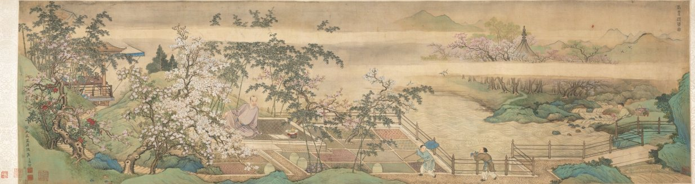
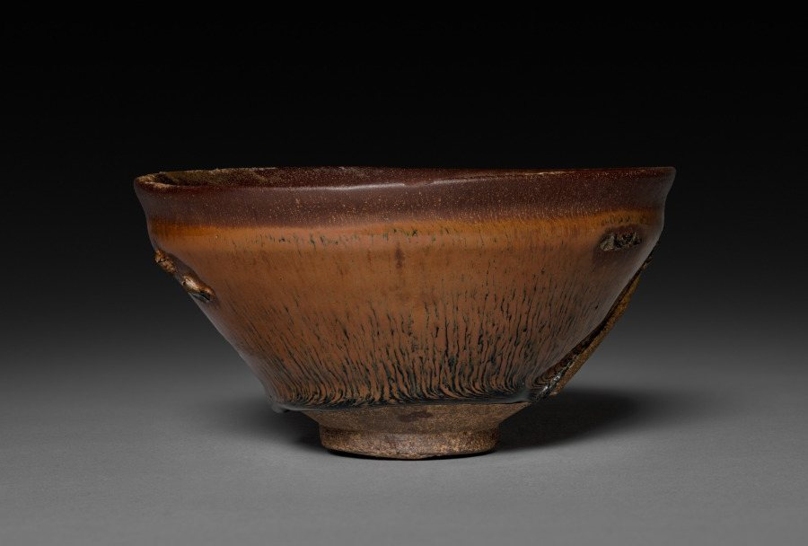
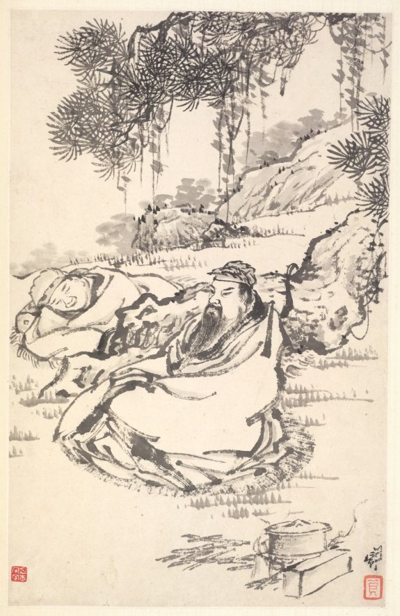

源
茶从哪来 · 四代饮法
同一片叶子，唐人煮它、宋人点它、明人泡它、清人功夫它。喝法的变化，比茶本身更能说明中国人怎么过日子。点击左侧四代，看每个时代的人如何把茶送进嘴里。
一杯茶的路
茶不只往杯子里走，也往边疆走。中原缺马，边地缺茶——游牧饮食多肉少菜，茶能解腻、补充维生素，于是有了延续千年的"茶马互市"。茶压成砖，马赶成队，一条路把两种生活接在一起。
"茶马古道"是 1990 年代才提出的说法，历史上通称"茶马互市"。讲古代史时，用后者更准确。
类
六大茶类 · 一条发酵光谱
六大茶类不是六种树，而是同一片叶子被"发酵"到什么程度。把六张茶卡拖到下方光谱上的正确位置——位置对了，卡片会定住，并解锁它的三款代表茶。
点一张茶卡，查看它的工艺、汤色与代表茶。
器
陆羽二十四器 · 配对解锁
陆羽在《茶经·四之器》里为煮一碗茶准备了二十四件器具。这里分成四组，把器物和它的用途配成对。配对成功，图鉴里就多一件。
艺
点茶 · 斗茶 · 冲泡
宋代人喝茶是"点"出来的：把茶粉调成膏，用竹筅击拂出乳白的汤花。下面三件事，一件比一件讲究手感。
其一 · 点茶击拂
按住鼠标或手指，在盏里画圈。速度落在绿色"稳"区，汤花才会细。共七汤，参考《大观茶论》的节奏：先轻后急，收在细处。
其二 · 斗茶
斗茶比三样：汤色、汤花、水痕。标准出自蔡襄《茶录》——汤色贵白，汤花要咬盏，水痕先退的一方输。三局两胜，你来当裁判。

为什么斗茶用黑盏
黑釉不是为了好看，是为了衬白。汤花越白，黑底越显；建盏的兔毫、油滴，是窑火里铁析出的结晶，每一只都不一样。
南宋 建盏 · 克利夫兰艺术博物馆藏，CC0
其三 · 冲泡模拟
选一款茶，调水温、时间、茶水比，看它会发生什么。分数只是参考，趋势才是真知识。
味
盲品 · 风味轮
看外形、看汤色、闻香、尝味——茶人判断一款茶，靠的是三条线索的交叉验证。八道盲品，从三条线索里猜出茶类。
礼
五地茶俗 · 六首茶诗
茶从来不只是饮料。它是待客的规矩、是高原上的热量、是客家人碗里的咸香。点开每一张卡，看一地的茶怎么喝、怎么待客。

卢仝与七碗茶
卢仝（约 795—835）收到朋友寄来的新茶，写下《七碗茶歌》。从此中国人说茶，绕不开“七碗”和“两腋清风”。这幅清代闵贞的画，画的就是他。
茶博士考
四十题 · 五级称号